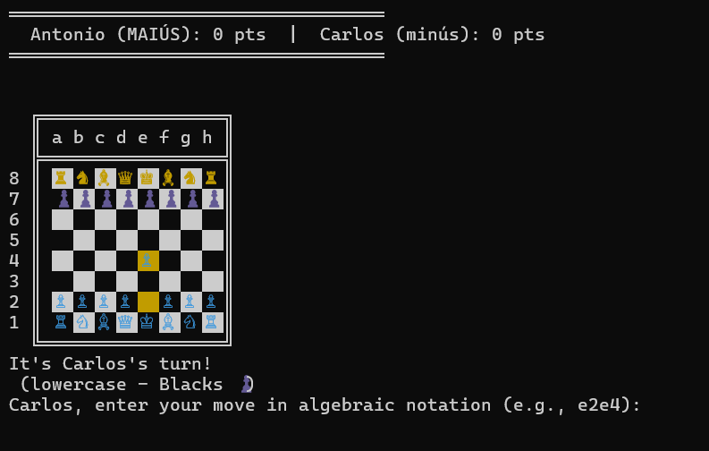

Desenvolvedor de jogos | Programador | Estudante
Olá! Sou um adolescente de 16 anos, que desde 3-4 anos fazia desenvolvimento (principalmente de jogos, em plataformas como a Godot Engine) por entretenimento e como passatempo.
Atualmente, estou cursando o Técnico em Informática, pois busco me qualificar naquilo que gosto e me identifico. Enquanto isso, estou buscando me aperfeiçoar por meio de alguns projetos particulares, compartilhá-los em plataformas internacionais como a Macondo e a Flavortown, e aprender diferentes linguagens de programação; para aprender e construir o futuro que pretendo trilhar na área de desenvolvimento.

Por causa de uma disciplina escolar com a qual trabalhei com a linguagem C, me desafiei a criar um jogo de xadrez de dois jogadores, local (sem partidas online), no formato de terminal.
Esse jogo também foi publicado na Flavortown, uma plataforma de programação e desafio global voltada a adolescentes.
O jogo possui como recursos:
Perfil do GitHub: acms2345